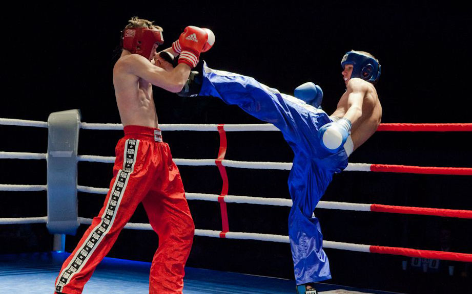

Кикбоксинг - это разновидность боевых искусств, где принято наносить удары и руками, и нижними конечностями, зародившееся в 1960-х годах.

В широком смысле слова под кикбоксингом иногда понимают различные ударные единоборства, правилами которых разрешены удары руками и ногами с использованием в экипировке боксёрских перчаток (тайский бокс, ушу, сават и пр.).
История возникновения кикбоксинга.
Кикбоксинг является зрелищным и жестоким видом спорта. Бойцы должны отлично владеть как элементами восточных единоборств, так и бокса. Поединок превращается в интересное шоу, а зрителям интересно наблюдать за бросками, ударами ногами и подсечками. Вид спорта появился в Америке, ориентировочно в 60-70 годы прошлого века. Название «кикбоксинг» придумал Чак Норрис. Сначала были объединены английский бокс и каратэ, а потом добавились техники тхэквондо и тайский бокс. В начале 70-х годов на территории Америки было основано немало школ, обучающих различным видам единоборств. Почти сразу появились правила и регламент турниров по кикбоксингу. Популярность росла, и начали проводиться международные соревнования. Спортсмены делились на 4 весовые категории. В СССР только в 1990 году официально признали кикбоксинг. Сейчас он пользуется невероятной популярностью, причём единоборство подходит как для мужчин, так и для женщин.
Техника кикбоксинга.
Кикбоксинг характеризуется уникальностью собственных разработок в отношении техники выполнения приёмов, часть которых заимствована из тхэквондо. Данная черта проявляется в разновидностях ударов, совершаемых ногами и руками, и их названиях. Эта особенность выделяет кикбоксинг в самостоятельный вид боевого искусства.
Удары в кикбоксинге разделяются по виду дистанций на:
Разделы кикбоксинга.
Экипировка.